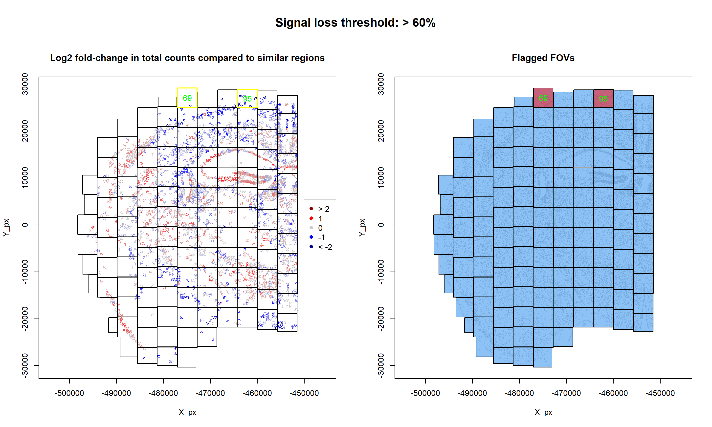

Last updated: 2025-09-02
Checks: 7 0
Knit directory: CosMx_pipeline_LGA/
This reproducible R Markdown analysis was created with workflowr (version 1.7.1). The Checks tab describes the reproducibility checks that were applied when the results were created. The Past versions tab lists the development history.
Great! Since the R Markdown file has been committed to the Git repository, you know the exact version of the code that produced these results.
Great job! The global environment was empty. Objects defined in the global environment can affect the analysis in your R Markdown file in unknown ways. For reproduciblity it’s best to always run the code in an empty environment.
The command set.seed(20250517) was run prior to running
the code in the R Markdown file. Setting a seed ensures that any results
that rely on randomness, e.g. subsampling or permutations, are
reproducible.
Great job! Recording the operating system, R version, and package versions is critical for reproducibility.
Nice! There were no cached chunks for this analysis, so you can be confident that you successfully produced the results during this run.
Great job! Using relative paths to the files within your workflowr project makes it easier to run your code on other machines.
Great! You are using Git for version control. Tracking code development and connecting the code version to the results is critical for reproducibility.
The results in this page were generated with repository version 9bc387c. See the Past versions tab to see a history of the changes made to the R Markdown and HTML files.
Note that you need to be careful to ensure that all relevant files for
the analysis have been committed to Git prior to generating the results
(you can use wflow_publish or
wflow_git_commit). workflowr only checks the R Markdown
file, but you know if there are other scripts or data files that it
depends on. Below is the status of the Git repository when the results
were generated:
Ignored files:
Ignored: .Rhistory
Ignored: .Rproj.user/
Ignored: NBClust-Plots/
Ignored: analysis/.Rhistory
Ignored: data/seuAtoMx/
Ignored: output/processed_data/Log/
Ignored: output/processed_data/RC/
Ignored: output/processed_data/SCT/
Ignored: output/processed_data/exprMat_unfiltered.RDS
Ignored: output/processed_data/fov_positions_unfiltered.RDS
Ignored: output/processed_data/metadata_unfiltered.RDS
Ignored: output/processed_data/negMat_unfiltered.RDS
Ignored: output/processed_data/seu_filtered.RDS
Ignored: output/processed_data/seu_semifiltered.RDS
Untracked files:
Untracked: output/performance_reports/
Unstaged changes:
Modified: CosMx_pipeline_LGA.Rproj
Modified: _workflowr.yml
Note that any generated files, e.g. HTML, png, CSS, etc., are not included in this status report because it is ok for generated content to have uncommitted changes.
These are the previous versions of the repository in which changes were
made to the R Markdown (analysis/1.0_qc_and_filtering.Rmd)
and HTML (docs/1.0_qc_and_filtering.html) files. If you’ve
configured a remote Git repository (see ?wflow_git_remote),
click on the hyperlinks in the table below to view the files as they
were in that past version.
| File | Version | Author | Date | Message |
|---|---|---|---|---|
| Rmd | 78c8449 | lga-uoc | 2025-09-02 | Add Rmds files in analysis |
library(data.table) # Efficient data management
library(Matrix) # Sparse matrices
library(here) # Enhanced file referencing in project-oriented workflows
library(dplyr) # For the use of pipes %>%
library(kableExtra) # For table formatting
library(Seurat) # Seurat object
library(ggplot2) # Graphics
library(patchwork) # Layout graphicsFirst of all, data needs to be loaded into the session. For this script, only the created Seurat object is needed. However, the pipeline can also be started here if the Seurat object from AtoMx is available.
# Load Seurat object (from previous script or from AtoMx, select in YAML)
option <- "previous" # Select "previous" or "AtoMx"
if (option == "previous") {
seu <- readRDS(here("output","processed_data","seu_semifiltered.RDS"))
} else if (option == "AtoMx") {
seuAtoMx_dir <- here("data", "seuAtoMx")
seuAtoMx_name <- dir(seuAtoMx_dir)
seu <- readRDS(here(seuAtoMx_dir,seuAtoMx_name))
} else {
stop("The selected method is invalid, choose: 'previous' or 'AtoMx'")
}In CosMx SMI, slides might contain more than one sample/tissue per slide. If this was the case, this information can be added based on the FOVs of each sample. In this sense, visualizing the FOV arrangement and assign each FOV to its corresponding tissue could be interesting.
## Code adapted from CosMxLite vignette
# FOV arrangement in Slide
ggplot(seu@meta.data,
aes(x = seu$x_FOV_px, y = seu$y_FOV_px, label = seu$fov)) +
geom_point(size = 5, colour = "lightblue", shape = 15) +
geom_text(size = 3) +
theme_classic() +
labs(title = "FOV Arrangement",
x = "Global X Position (px)",
y = "Global Y Position (px)") +
theme(plot.title = element_text(hjust = 0.5, face = "bold", margin = margin(b = 15)),
axis.title.x = element_text(margin = margin(t = 15)),
axis.title.y = element_text(margin = margin(r = 15)),
panel.grid.major = element_line(colour = "grey92", linetype = "solid"))In this dataset, there is no information of multiple samples being scanned on the same slide, so it has been assumed that all FOVs belong to the same sample/tissue. Another possibility, for single-sample slides like this one, would be to differentiate areas within the tissue, in case you want to explore them separately (see CosMxLite vignette for more information).
Another interesting preliminary visualization would be to observe how are cells distributed based on different attributes, such as its area or the intensity of a particular stain.
## Code adapted from CosMxLite vignette
# Cell arrangement by size
p1 <- ggplot(seu@meta.data,
aes(x = seu$CenterX_global_px, y = seu$CenterY_global_px, colour = log2(seu$Area))) +
geom_point(size = 0.01) +
theme_classic() +
scale_colour_gradientn(colours = c("grey50", "blue", "yellow", "red")) +
labs(title = "Area (log2)",
x = "Global X Position (px)",
y = "Global Y Position (px)") +
theme(plot.title = element_text(hjust = 0.5, face = "bold", margin = margin(b = 15)),
axis.title.x = element_text(margin = margin(t = 15)),
axis.title.y = element_text(margin = margin(r = 15)),
panel.grid.major = element_line(colour = "grey92", linetype = "solid"),
legend.position = "right")
# Cell arrangement by DAPI stainning
p2 <- ggplot(seu@meta.data,
aes(x = seu$CenterX_global_px, y = seu$CenterY_global_px, colour = log2(seu$Mean.DAPI))) +
geom_point(size = 0.01) +
theme_classic() +
scale_colour_gradientn(colours = c("grey50", "yellow", "purple")) +
labs(title = "DAPI stainning (log2)",
x = "Global X Position (px)",
y = "Global Y Position (px)") +
theme(plot.title = element_text(hjust = 0.5, face = "bold", margin = margin(b = 15)),
axis.title.x = element_text(margin = margin(t = 15)),
axis.title.y = element_text(margin = margin(r = 15)),
panel.grid.major = element_line(colour = "grey92", linetype = "solid"),
legend.position = "right")
# Arrange plots
p1 + p2Nanostring recommendations on how to filter CosMx data can be found in several posts from their CosMx Scratch Space blog. In general, basic QC can be made through filtering bad quality FOVs and/or cells.
Although no especial recommendations have been found on QC based on unassigned transcripts, visualizing the fraction of unassigned transcripts per FOV might be helpful to understand if any of them have an excessively high amount or if they are all more or less in the same values.
# Summarize Unassigned Transcripts per FOV
un_tx_summary <- seu@meta.data %>%
select(fov, unassignedTranscripts) %>%
distinct() %>%
arrange(fov)
# Plot
ggplot(un_tx_summary, aes(x = as.factor(fov), y = unassignedTranscripts)) +
geom_col(fill = "lightblue", width = 0.7) +
scale_y_continuous(limits = c(0, 1),
breaks = seq(0, 1, by = 0.1),
expand = expansion(mult = c(0, 0.05))) +
theme_minimal() +
labs(title = "Fraction of Unassigned Transcripts per FOV",
x = "Field of View (FOV)",
y = "Fraction of Unassigned Transcripts") +
theme(plot.title = element_text(face = "bold", size = 16),
axis.title.x = element_text(margin = margin(t = 15)),
axis.title.y = element_text(margin = margin(r = 15)),
axis.text.x = element_text(angle = 90, vjust = 0.5, hjust = 1))In this case, all FOVs are more or less within the same range, and none of them present extreme values.
Following Nanostring CosMx Scratch Space blog post of FOV QC and the Nanostring’s CosMx Scratch Space vignette, quality control of bad quality FOVs can be made based on the following indicators of artifacts: diminished total counts and/or distorted expression profiles. In practice, this means:
Special functions from NanoString to perform FOV QC can be found here.
## Code adapted from Scratch Space vignette
# Load tools for FOV QC from Nanostring CosMx Scratch Space github
source("https://raw.githubusercontent.com/Nanostring-Biostats/CosMx-Analysis-Scratch-Space/Main/_code/FOV%20QC/FOV%20QC%20utils.R")
CosMx_barcodes <- readRDS(url("https://github.com/Nanostring-Biostats/CosMx-Analysis-Scratch-Space/raw/Main/_code/FOV%20QC/barcodes_by_panel.RDS"))
panel_barcode <- CosMx_barcodes$Mm_Neuro # Select the appropriate panel here
# Prepare the necessary data to run the FOV QC method
counts <- t(GetAssayData(seu, assay = "RNA", slot = "counts")) # Cells x genes
xy <- as.matrix(data.table(X_px = seu$CenterX_global_px,
Y_px = seu$CenterY_global_px))
rownames(xy) <- rownames(seu@meta.data)
# Run the FOV QC method
fovqc <- runFOVQC(counts = counts, xy = xy, fov = seu$fov, barcodemap = panel_barcode,
max_prop_loss = 0.6, max_totalcounts_loss = 0.6) # default
fovqc50 <- runFOVQC(counts = counts, xy = xy, fov = seu$fov, barcodemap = panel_barcode,
max_prop_loss = 0.6, max_totalcounts_loss = 0.5) # trial
# Results
if (length(fovqc$flaggedfovs) == 0) {
flaggedFOVs <- 0
flaggedFOVs_signal <- 0
flaggedFOVs_bias <- 0
flaggedFOVsCells <- character(0)
} else {
flaggedFOVs <- fovqc$flaggedfovs
flaggedFOVs_signal <- fovqc$flaggedfovs_fortotalcounts
flaggedFOVs_bias <- fovqc$flaggedfovs_forbias
flaggedFOVsCells <- rownames(seu@meta.data[(seu@meta.data$fov %in% flaggedFOVs), ])
}In this case, two bad quality FOVs have been found, reported signal loss. The following visualization will provide some more depth into the results:
## Code adapted from Scratch Space vignette
# Plot results from signal loss
par(mfrow = c(1, 2),
oma = c(0, 0, 4, 0))
FOVSignalLossSpatialPlot(fovqc)
mapFlaggedFOVs(fovqc)
mtext("Signal loss threshold: > 60%", outer = TRUE, line = 1, at = 0.5, cex = 1.5, font = 2)
As it can be observed, signal strength varies across FOVs relatively smoothly. However, two FOVs appear to have an overall lower signal.
In terms of reporter bias, no reporter probes have been detected to be underexpressed and, therefore, no FOVs have been flagged based on bias reporters:
As recommended by Nanostring in their CosMx Scratch Space blog, cell QC can be made by:
Another common filtering methods seen in CosMx related literature and also supported by the CosMxLite vignette are:
# Calculate percentage of negative and System Control probes
seu[["percent.NegPrb"]] <- seu$nCount_negprobes / (seu$nCount_RNA + seu$nCount_negprobes) * 100
seu[["percent.SysCon"]] <- seu$nCount_falsecode / (seu$nCount_RNA + seu$nCount_falsecode) * 100## Code adapted from CosMxLite vignette
## Points are removed as CosMx datasets can contain over 1 million cells and may hide the violin plot
# Violin plot
p1 <- VlnPlot(seu, features = c("nFeature_RNA", "nCount_RNA", "percent.NegPrb", "Area"), ncol = 4, pt.size = 0)
# Feature Scatter plots
p2 <- FeatureScatter(seu, feature1 = "nCount_RNA", feature2 = "percent.NegPrb") + NoLegend()
p3 <- FeatureScatter(seu, feature1 = "nCount_RNA", feature2 = "nFeature_RNA") + NoLegend()
p4 <- FeatureScatter(seu, feature1 = "Area", feature2 = "nCount_RNA") + NoLegend()
# Arrange plots
p1 / (p2 + p3 + p4)In sight of the violin plots, this dataset presents a low percentage of Negative probes, with some outliers that match those cells with the lower transcript counts and lower unique features. Therefore, the suggested filter cutoffs seem appropriate for this case.
Some additional cutoff could be set in >= 9000 total transcript counts and >= 60000 of area, approximately, to remove some potential outliers or multiplets.
## Code inspired by CosMxLite vignette
# Select filter thresholds
min_counts <- 20
max_counts <- 9000
min_features <- 10
max_neg_perc <- 5
max_area <- 60000
# Counts
flag1 <- sum(seu$nCount_RNA <= min_counts)
flag2 <- sum(seu$nCount_RNA >= max_counts)
p1 <- ggplot(seu@meta.data, aes(x = seu$nCount_RNA)) +
geom_histogram(bins = 100, fill = "lightblue", colour = "black") +
geom_vline(xintercept = min_counts, colour = "red", lwd = 1) +
geom_vline(xintercept = max_counts, colour = "red", lwd = 1) +
ggtitle(paste("Nº cells with nCount_RNA <=", min_counts, ":", flag1,
"\nNº cells with nCount_RNA >=", max_counts, ":", flag2)) +
theme_minimal()
# Feature
flag <- sum(seu$nFeature_RNA <= min_features)
p2 <- ggplot(seu@meta.data, aes(x = seu$nFeature_RNA)) +
geom_histogram(bins = 100, fill = "lightblue", colour = "black") +
geom_vline(xintercept = min_features, colour = "red", lwd = 1) +
ggtitle(paste("Nº cells with nFeature_RNA <=", min_features, ":", flag)) +
theme_minimal()
# NegPrb percentage
flag <- sum(seu$percent.NegPrb >= max_neg_perc)
p3 <- ggplot(seu@meta.data, aes(x = seu$percent.NegPrb)) +
geom_histogram(bins = 100, fill = "lightblue", colour = "black") +
geom_vline(xintercept = max_neg_perc, colour = "red", lwd = 1) +
ggtitle(paste("Nº cells with percent.NegPrb >=", max_neg_perc, ":", flag)) +
theme_minimal()
# Area
flag <- sum(seu$Area >= max_area)
p4 <- ggplot(seu@meta.data, aes(x = seu$Area)) +
geom_histogram(bins = 100, fill = "lightblue", colour = "black") +
geom_vline(xintercept = max_area, colour = "red", lwd = 1) +
ggtitle(paste("Nº cells with Area >=", max_area, ":", flag)) +
theme_minimal()
# Arrange plots
(p1 + p2) / (p3 + p4)As it can be observed, there are not many cells affected by the suggested cutoffs, therefore, the majority of the cells present good enough quality to go ahead with downstream analysis.
# Filtering FOVs
pre <- dim(seu)[2] # Cells pre filtering
keep_cells <- setdiff(Cells(seu), flaggedFOVsCells) # Keep cells from unflagged FOVs
seu <- subset(seu, cells = keep_cells)
post <- dim(seu)[2] # Cells post filteringAfter filtering all the cells from bad quality FOVs the dataset has been reduced from 48549 cells to 48068, a 1% of cells have been removed.
## Code adapted from CosMxLite vignette
# FOV arrangement in Slide
ggplot(seu@meta.data,
aes(x = seu$x_FOV_px, y = seu$y_FOV_px, label = seu$fov)) +
geom_point(size = 5, colour = "lightblue", shape = 15) +
geom_text(size = 3) +
theme_classic() +
labs(title = "FOV Arrangement",
x = "Global X Position (px)",
y = "Global Y Position (px)") +
theme(plot.title = element_text(hjust = 0.5, face = "bold", margin = margin(b = 15)),
axis.title.x = element_text(margin = margin(t = 15)),
axis.title.y = element_text(margin = margin(r = 15)),
panel.grid.major = element_line(colour = "grey92", linetype = "solid"))As it can be observed, FOVs 69, 95 are now not present in the dataset.
## Code adapted from CosMxLite vignette
# Filtering cells
pre <- dim(seu)[2] # Cells pre filtering
seu <- subset(seu,
subset = nCount_RNA > min_counts &
nCount_RNA < max_counts &
nFeature_RNA > min_features &
percent.NegPrb < max_neg_perc &
Area < max_area)
post <- dim(seu)[2] # Cells post filteringAfter filtering the dataset has been reduced from 48068 cells to 47918. Therefore, an additional 0.3% of cells have been filtered out.
## Code adapted from CosMxLite vignette
## Points are removed from violin plots as CosMx datasets can contain over 1 million cells and may hide the violin plot
# Violin plot
p1 <- VlnPlot(seu, features = c("nFeature_RNA", "nCount_RNA", "percent.NegPrb", "Area"), ncol = 4, pt.size = 0)
# Feature Scatter plots
p2 <- FeatureScatter(seu, feature1 = "nCount_RNA", feature2 = "percent.NegPrb") + NoLegend()
p3 <- FeatureScatter(seu, feature1 = "nCount_RNA", feature2 = "nFeature_RNA") + NoLegend()
p4 <- FeatureScatter(seu, feature1 = "Area", feature2 = "nCount_RNA") + NoLegend()
# Arrange plots
p1 / (p2 + p3 + p4)| Chunk | Time_sec | Memory_Mb |
|---|---|---|
| Libraries | 1.52 | 148.7 |
| LoadData | 1.52 | 427.0 |
| VizFOV | 1.63 | 23.8 |
| VizCells | 3.77 | 13.7 |
| VizUnTx | 0.47 | 4.2 |
| FOVQc | 7.12 | 220.1 |
| VizFOVQC1 | 1.56 | 5.3 |
| VizFOVQC2 | 0.46 | 2.5 |
| FalseProbesPerc | 0.20 | 1.5 |
| VizCellQC1 | 12.31 | 27.5 |
| VizCellQC2 | 1.08 | -5.1 |
| FOVFiltering | 1.13 | 8.2 |
| VizFOVPostFilt | 3.04 | 13.0 |
| CellFiltering | 1.05 | 8.5 |
| VizPostFilt | 12.14 | 6.8 |
| SavingSeuObj | 18.28 | 0.0 |
| Total | 67.28 | 905.7 |
R version 4.4.3 (2025-02-28 ucrt)
Platform: x86_64-w64-mingw32/x64
Running under: Windows 10 x64 (build 19045)
Matrix products: default
locale:
[1] LC_COLLATE=Spanish_Spain.utf8 LC_CTYPE=Spanish_Spain.utf8
[3] LC_MONETARY=Spanish_Spain.utf8 LC_NUMERIC=C
[5] LC_TIME=Spanish_Spain.utf8
time zone: Europe/Madrid
tzcode source: internal
attached base packages:
[1] stats graphics grDevices utils datasets methods base
other attached packages:
[1] patchwork_1.3.0 ggplot2_3.5.1 SeuratObject_4.1.4 Seurat_4.4.0
[5] kableExtra_1.4.0 dplyr_1.1.4 here_1.0.1 Matrix_1.7-2
[9] data.table_1.17.0 workflowr_1.7.1
loaded via a namespace (and not attached):
[1] RColorBrewer_1.1-3 rstudioapi_0.17.1 jsonlite_1.8.9
[4] magrittr_2.0.3 spatstat.utils_3.1-5 farver_2.1.2
[7] rmarkdown_2.29 fs_1.6.5 vctrs_0.6.5
[10] ROCR_1.0-11 spatstat.explore_3.5-2 htmltools_0.5.8.1
[13] sass_0.4.9 sctransform_0.4.2 parallelly_1.41.0
[16] KernSmooth_2.23-26 bslib_0.8.0 htmlwidgets_1.6.4
[19] ica_1.0-3 plyr_1.8.9 plotly_4.11.0
[22] zoo_1.8-14 cachem_1.1.0 whisker_0.4.1
[25] igraph_2.1.2 mime_0.12 lifecycle_1.0.4
[28] pkgconfig_2.0.3 R6_2.5.1 fastmap_1.2.0
[31] fitdistrplus_1.2-4 future_1.34.0 shiny_1.10.0
[34] digest_0.6.37 colorspace_2.1-1 ps_1.8.1
[37] rprojroot_2.0.4 tensor_1.5.1 irlba_2.3.5.1
[40] labeling_0.4.3 progressr_0.15.1 spatstat.sparse_3.1-0
[43] httr_1.4.7 polyclip_1.10-7 abind_1.4-8
[46] compiler_4.4.3 withr_3.0.2 MASS_7.3-64
[49] tools_4.4.3 lmtest_0.9-40 httpuv_1.6.15
[52] future.apply_1.11.3 goftest_1.2-3 glue_1.8.0
[55] callr_3.7.6 nlme_3.1-167 promises_1.3.2
[58] grid_4.4.3 Rtsne_0.17 getPass_0.2-4
[61] cluster_2.1.8 reshape2_1.4.4 generics_0.1.3
[64] gtable_0.3.6 spatstat.data_3.1-6 tidyr_1.3.1
[67] sp_2.2-0 xml2_1.3.6 spatstat.geom_3.5-0
[70] RcppAnnoy_0.0.22 ggrepel_0.9.6 RANN_2.6.2
[73] pillar_1.10.0 stringr_1.5.1 later_1.4.1
[76] splines_4.4.3 lattice_0.22-6 survival_3.8-3
[79] FNN_1.1.4.1 deldir_2.0-4 tidyselect_1.2.1
[82] miniUI_0.1.1.1 pbapply_1.7-4 knitr_1.49
[85] git2r_0.36.2 gridExtra_2.3 svglite_2.1.3
[88] scattermore_1.2 xfun_0.49 matrixStats_1.4.1
[91] pheatmap_1.0.12 stringi_1.8.4 lazyeval_0.2.2
[94] yaml_2.3.10 evaluate_1.0.1 codetools_0.2-20
[97] tibble_3.2.1 cli_3.6.3 uwot_0.2.3
[100] xtable_1.8-4 reticulate_1.40.0 systemfonts_1.1.0
[103] munsell_0.5.1 processx_3.8.4 jquerylib_0.1.4
[106] Rcpp_1.0.13-1 globals_0.16.3 spatstat.random_3.4-1
[109] png_0.1-8 spatstat.univar_3.1-4 parallel_4.4.3
[112] listenv_0.9.1 viridisLite_0.4.2 scales_1.3.0
[115] ggridges_0.5.6 leiden_0.4.3.1 purrr_1.0.2
[118] rlang_1.1.4 cowplot_1.1.3